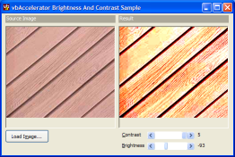

Brightness and Contrast Sample (56K)
Brightness and Contrast Sample (56K)
 5 Sep 2003
5 Sep 2003
First Posted

Brightness and Contrast
Use image processing to apply these effects to images
This article demonstrates how to apply two of the simplest image processsing filters, brightness and contrast, to an image.
Brightness
To apply a brightness filter you simply add a fixed amount to every pixel in the image and then clamp the result to ensure it remains in the range 0 - 255.
Contrast
To apply a contrast filter, you determine if a pixel is lighter or darker than a threshold amount. If it's lighter, you scale the pixel's intensity up otherwise you scale it down. In code this is done by subtracting the threshold from a pixel, multiplying by the contrast factor and adding the threshold value back again. As with the brighness filter the resulting value needs to be clamped to ensure it remains in the range 0 - 255.
In Code
Here's the implementation of the filters using a True Colour DIBSection. Brightness values can be set from -255 (result all black) through 0 (no effect) through +255 (result all white). Contrast can be varied from 1/n (least contrast) through 1 (no effect) to n (most contrast). The most useful effects occur when n is less than 5; at minimal contrast the image tends towards the threshold value whereas with maximal contrast the image tends towards just black and white pixels.
Public Sub process( _
cSrc As cDIBSection, _
cDst As cDIBSection _
)
Dim bDib() As Byte
Dim bDibDst() As Byte
Dim tSA As SAFEARRAY2D
Dim tSADst As SAFEARRAY2D
' Get the bits in the from DIB section:
With tSA
.cbElements = 1
.cDims = 2
.Bounds(0).lLbound = 0
.Bounds(0).cElements = cSrc.Height
.Bounds(1).lLbound = 0
.Bounds(1).cElements = cSrc.BytesPerScanLine
.pvData = cSrc.DIBSectionBitsPtr
End With
CopyMemory ByVal VarPtrArray(bDib()), VarPtr(tSA), 4
' Get the bits in the to DIB section:
With tSADst
.cbElements = 1
.cDims = 2
.Bounds(0).lLbound = 0
.Bounds(0).cElements = cDst.Height
.Bounds(1).lLbound = 0
.Bounds(1).cElements = cDst.BytesPerScanLine()
.pvData = cDst.DIBSectionBitsPtr
End With
CopyMemory ByVal VarPtrArray(bDibDst()), VarPtr(tSADst), 4
Dim x As Long
Dim y As Long
Dim xEnd As Long
Dim yEnd As Long
Dim fR As Double
Dim fB As Double
Dim fG As Double
xEnd = cSrc.BytesPerScanLine() - 3
yEnd = cSrc.Height - 1
For x = 0 To xEnd Step 3
For y = 0 To yEnd
' Contrast
fR = ((bDib(x + 2, y) - 128#) * m_fContrast) + 128
fG = ((bDib(x + 1, y) - 128#) * m_fContrast) + 128
fB = ((bDib(x, y) - 128#) * m_fContrast) + 128
' Brightness:
fR = fR + m_lBrightness
fG = fG + m_lBrightness
fB = fB + m_lBrightness
' Clamp results:
If (fR > 255) Then fR = 255
If (fR < 0) Then fR = 0
If (fG > 255) Then fG = 255
If (fG < 0) Then fG = 0
If (fB > 255) Then fB = 255
If (fB < 0) Then fB = 0
' Apply to DIB
bDibDst(x + 2, y) = fR
bDibDst(x + 1, y) = fG
bDibDst(x, y) = fB
Next y
Next x
CopyMemory ByVal VarPtrArray(bDibDst), 0&, 4
CopyMemory ByVal VarPtrArray(bDib), 0&, 4
End Sub
In this implementation, the brightness filter is chained after the contrast filter but prior to clamping the results from the contrast filter. This allows more extreme effects to be obtained when using high contrast and low brightness.
Conclusion
Brightness and Contrast filters are simple to implement; this article has provided an implementation of both for true colour images.